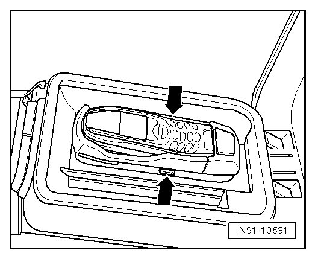
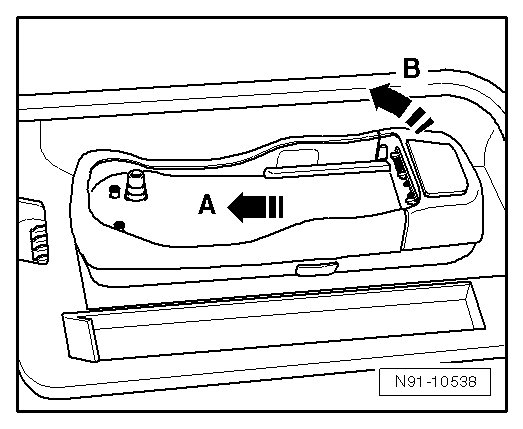
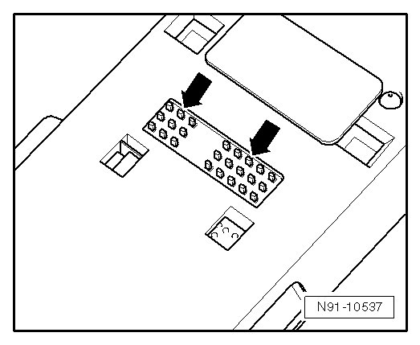

Mount Type 1
Telephone Mount
There are different versions of the telephone cradle. The one selected must be compatible with the cell phone being used (accessory). The telephone cradle is then engaged on the base plate in the center armrest.
Removing
- Press the buttons on the side of the telephone cradle - arrows - and remove the cell phone.

• The illustration and instructions here apply to the "Nokia" cell phone. For cell phones made by other manufacturers, other mechanisms are used if necessary to remove the cell phone.
- Press telephone bracket in direction - A - and then pull it up in direction - B -.

Installing
Before installing, ensure contacts on telephone cradle - arrows - can move and the metal is clean. The same applies to contact surfaces on the base plate.

- Guide front of telephone cradle into retaining tab and then press down until it audibly engages.